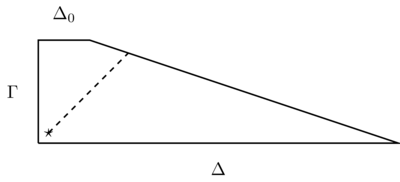
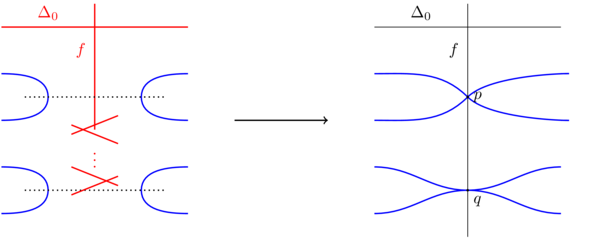

Horikawa surfaces
Horikawa surfaces
Mostly for my own convenience, here is an overview of the geometry of Horikawa surfaces (because I will forget most of this).
Horikawa's work
A Horikawa surface is a minimal surface of general type with geometric genus \(p_g\geq 3\) which lies on the Noether line \(c_1^2=2p_g-4\). These all have irregularity zero. This means that the Chern numbers are given in terms of \(p_g\) by \[c_1^2=2p_g-4,\quad c_2=10p_g+16\] These surfaces were studied extensively by Horikawa. Here is a summary of what he proved. Let \(n=p_g-1\).
- The canonical map \(\Phi_K\colon X\to\mathbf{CP}^n\) has image a surface \(W=\Phi_K(X)\) of degree \(n-1\) in \(\mathbf{CP}^n\) (Lemma 1.1). Write \(f\colon X\to W\) for the corestriction; then \(f\) is a double branched cover. The ramification locus \(R\subset X\) of \(f\) satisfies \(K_X=f^*K_W+R\); the branch locus \(B\subset W\) is the pushforward \(f_*R\) and has no multiple component.
- The image \(W\) of \(f\) is one of the following
(Lemma 1.2):
- "Type (∞)": (\(n=2\)) the whole of \(\mathbf{CP}^2\) or (\(n=5\)) the quadratic Veronese surface \(\mathbf{CP}^2\subset\mathbf{CP}^5\).
- "Type (d)": (\(n\geq 3\)) a Hirzebruch surface \(\mathbf{F}_d\) where \(d+3\leq n\) and \(n-d-3\) is even, embedded into \(\mathbf{CP}^n\) via the linear system \(\left|\Delta_0+\frac{n-1+d}{2}\Gamma\right|\) where \(\Gamma\) is a fibre of \(\mathbf{F}_d\to\mathbf{CP}^1\) and \(\Delta_0\) is the unique section with square \(-d\). In fact, we will see below that \(n\geq\max(d+3,2d-3)\).
- "Type (d')": (\(n\geq 3\)) the cone \(C_{n-1}\) on a rational curve of degree \(d=n-1\) in \(\mathbf{CP}^{n-1}\subset\mathbf{CP}^n\). In fact, this is only possible for \(n=3,4,5\).
We will analyse the possible branch curves case-by-case below.
- If \(K^2\) is not divisible by 8 (\(p_g\neq 2\mod 4\)) then any two Horikawa surfaces with this value of \(K^2\) can be connected through deformations (i.e. there is a path in the Gieseker moduli space connecting these surfaces: note that this path may connect different irreducible components of the moduli space, but all surfaces along the path are diffeomorphic).
- If \(k\geq 2\), \(K^2=8k\) (\(p_g=4k+2\)) then there are two deformation
classes of Horikawa surfaces with this value of \(K^2\) (Theorem
7.1). These comprise, on the one hand, surfaces of type (d) with \(d\)
even and \(d\leq 2k\), and, on the other, surfaces of type (2k+2).
- If, moreover, \(k\) is even, then these surfaces are homotopy equivalent.
- If, instead, \(k\) is odd, then they are distinguished by the second Stiefel-Whitney class (type \((2k+2)\) is spin/has even intersection form, the others are not spin/have odd intersection form).
- Finally (Theorem 4.1), if \(K^2=8\), then there are two deformation classes: surfaces of type (0) and (2) and surfaces of type (∞) and (4'). Surfaces from different deformation classes are not homotopy equivalent, distinguished by their second Stiefel-Whitney class.
Type (∞)
(\(n=2\)) The surface \(W\) is the whole of \(\mathbf{CP}^2\); the ramification locus is then homologous to \(4f^*H\) (as \(K_X=f^*H\) and \(K_W=-3H\)) so the branch locus \(B\) is a curve of degree 8 in \(\mathbf{CP}^2\).
(\(n=5\)) The surface \(W\) is the quadratic Veronese surface \(\mathbf{CP}^2\subset\mathbf{CP}^5\). We have \(K_X=\Phi_K^*H\), but \(\Phi_K\) is the composition of \(f\) with the inclusion of the (degree 2) Veronese surface, so if \(h\) is the hyperplane class on \(\mathbf{CP}^2\) we get \(\Phi_K^*H=2f^*h\). We also have \(f^*K_W=-3g^*h\), so \(R=5g^*h\) and the branch locus \(B\) is a curve of degree 10.
Type (d)
(\(n\geq 3\)) The surface \(W\) is a Hirzebruch surface \(\mathbf{F}_d\) where \(n-d-3\) is a nonnegative even integer, embedded into \(\mathbf{CP}^n\) via the linear system \(\left|\Delta_0+\frac{n-1+d}{2}\Gamma\right|\) where \(\Gamma\) is a fibre of \(\mathbf{F}_d\to\mathbf{CP}^1\) and \(\Delta_0\) is the unique section with square \(-d\).
In this case, if \(i\colon W\to\mathbf{CP}^n\) is the inclusion, we have \[K_X=\Phi_K^*H=(i\circ f)^*H=f^*\left(\Delta_0+\frac{n-1+d}{2}\Gamma\right)\] and \(K_W=-2\Delta_0-(d+2)\Gamma\), so \(R=f^*\left(3\Delta_0+\frac{n+3d+3}{2}\Gamma\right)\). Therefore the branch locus \(B\) is homologous to \(6\Delta_0+(n+3d+3)\Gamma\). Note that since \(B\) has no multiple component, its intersection number with \(\Delta_0\) must be at least \(-d\) (it equals \(-d\) if \(B=\Delta_0\) and it increases for every other component of \(B\)). This means \(\Delta_0\cdot B=n-3d+3\geq -d\) or \(d\leq \frac{1}{2}(n+3)\).
When \(d\leq (n+3)/3\) the generic curves in the class \(B=6\Delta_0+(n+3+3d)\Gamma\) are smooth and irreducible. When \((n+3)/2\geq d>(n+3)/3\), the generic curves in the class \(B\) are reducible of the form \(\Delta_0+B_0\) where \(B_0\) is an irreducible smooth curve which intersects \(\Delta_0\) transversely at \(n+3-2d\) points. In particular, when \(n=2d-3\), \(\Delta_0\) and \(B_0\) are disjoint.
Type (d')
(\(n\geq 3\)) The surface \(W\) is the cone \(C_{n-1}\) on a rational curve of degree \(d=n-1\) in \(\mathbf{CP}^{n-1}\subset\mathbf{CP}^n\). In this case, \(f\) factors through the minimal resolution \(\mathbf{F}_{n-1}\to C_{n-1}\) (Lemma 1.5). The branch locus in \(\mathbf{F}_{n-1}\) is homologous to \(6\Delta_0+4n\Gamma\) and, again, \(\Delta_0\cdot B\geq -(n-1)\). This means \(n\leq 5\) (in fact the only possibilities are \(n=3,4,5\)).
Fintushel and Stern on Horikawa surfaces
Fintushel and Stern, in their classic paper on rational blowdown, study a family of Horikawa surfaces they call \(H(N)\) with \(K^2=2N-6\). This has \(p_g=N-1\), so \(n=N-2\). They take a surface of type (0), which is then a branched cover of \(\mathbf{F}_0\) with branch locus \(B=6\Delta_0+(N+1)\Gamma\). They point out that, smoothly, this is the same as taking the branched cover of \(\mathbf{F}_{N-3}\) branched over \(4(\Delta+\Gamma)+2\Delta_0\) (where \(\Delta=\Delta_0+(N-3)\Gamma\) is the class of a positive section). At least this makes sense when \(N\) is odd so that \(\mathbf{F}_{N-3}\) is diffeomorphic to \(\mathbf{F}_0\).
Note that the choice of Hirebruch surface they give would correspond to type (N-3) in Horikawa's terminology, which is actually forbidden (the class \(4(\Delta+\Gamma)+2\Delta_0\) has no reduced holomorphic representative in \(\mathbf{F}_{N-3}\) as its intersection with \(\Delta_0\) is too negative). Nonetheless, this rational blow-down construction does have a complex-geometric interpretation due to Lee and Park. More on this below.
Their motivation for choosing this Hirzebruch surface is that they can find a rational homology ball \(B_{N-2,1}\) in \(\mathbf{F}_{N-3}\) whose complement contains the branch curve. One can see this explicitly in an almost toric picture for the Hirzebruch surface:

Figure 1: An almost toric picture of the Hirzebruch surface \(\mathbf{F}_{N-3}\): we have performed a nodal trade at the bottom left corner so that a neighbourhood of the dashed line is a rational homology ball \(B_{N-2,1}\) (the numbers \((N-2,1)\) can be read off from how the dashed line intersects the sloping edge). Note that for this picture to make sense, we need the length of \(\Gamma\) to be strictly bigger than 1, otherwise the dashed line (with slope 1) will not intersect the sloping edge at an internal point. The length of the long bottom edge is \(N-2\).
In the branched double cover we can therefore find two disjoint rational homology balls (note that \(N-2\) is odd, and \(\pi_1(B_{N-2,1})\) is cyclic of order \(N-2\), so the rational homology ball lifts in two different ways to the double cover). Fintushel and Stern prove that the result of rationally blowing down these two rational homology balls in \(H(N)\) is an elliptic surface \(E(N)\).
Lee and Park on Horikawa surfaces
In an attempt to understand Fintushel and Stern's construction algebro-geometrically, Lee and Park showed that one can construct Horikawa surfaces via \(\mathbf{Q}\)-Gorenstein smoothing. The idea is that there is a singular surface \(X_N\) with two Wahl singularities of type \(\frac{1}{(N-2)^2}(1,N-3)\) such that
- the minimal resolution of \(X_N\) is an elliptic surface,
- \(X_N\) is QG-smoothable to a Horikawa surface \(H(N)\) (in the notation of Subsection 1.5).
Here is how their construction works:
- Start with a Hirzebruch surface \(\mathbf{F}_N\). Let \(f\) be one of the fibres, let \(\Delta_0\) be the section with square \(-N\) and let \(\Delta\) be the homology class of a section with square \(N\).
- Find an irreducible curve \(D\subset\mathbf{F}_N\) in the linear
system \(4\Delta\) such that:
- \(D\) intersects \(f\) at two points \(p\) and \(q\); \(D\) has an \(A_1\) singularity at \(p\) and an \(A_{2N-9}\)-singularity at \(q\). In other words, in local coordinates \((x,y)\) at \(p\) (respectively \(q\)) where \(f=(x=0)\), \(D\) looks like \((y-x)(y+x)=0\) (respectively \((y-x^{N-4})(y+x^{N-4})=0\)).
- Blow up \(\mathbf{F}_N\) at \(p\) and then repeatedly at \(q\) to separate the branches of \(D\). The fibre \(f\) becomes a \(-2\)-curve (it had square zero and is blown up twice). The exceptional curve of the blow-up at \(q\) is a string of \((N-5)\) \((-2)\)-curves followed by a \(-1\)-curve.
Here is a picture, with \(D\) and its proper transform drawn in blue, \(-1\)-spheres drawn dotted, and in red, a configuration of curves which, upon contraction, yields a Wahl singularity of type \(\frac{1}{(N-2)^2}(1,N-3)\).

- Let \(Z_N\) be the blown-up Hirzebruch surface and let \(\tilde{D}\)
denote the proper transform of \(D\). Let \(E\) be the double cover of
\(Z_N\) branched over \(\tilde{D}\). The \(-1\)-spheres become
\(-2\)-spheres and there are now two disjoint red chains of
spheres. The double cover \(E\) is an elliptic surface: the preimages
of the generic fibres of the Hirzebruch surface are elliptic curves
(double-covering the rulings of the Hirzebruch surface branched at
the four points of intersection with \(D\)). The union of all
\(-2\)-spheres forms an affine \(A_{2N-6}\) fibre (a cycle of
\(-2\)-spheres).
Equivalently, we could have taken the double cover of \(\mathbf{F}_N\) branched over \(D\) and then \(E\) is its minimal resolution. We can compute the invariants of \(E\): if \(L\) is a line bundle on \(\mathbf{F}_N\) whose square is \(\mathcal{O}(D)\) then \(L^2=4N\) and \(K_{\mathbf{F}_N}\cdot L=-2N-4\), so, using the formulae from Barth-Hulek-Peters-Van de Ven (Section 22, Eqs 9):
\begin{align} K_E^2&=2K_{\mathbf{F}_N}^2+4K_{\mathbf{F}_N}\cdot L+2L\cdot L\\ &=16-8N-16+8N\\ &=0\\ c_2(E)&=2c_2(\mathbf{F}_N)+2K_{\mathbf{F}_N}\cdot L+4L\cdot L\\ &=8-4N-8+16N\\ &=12N\\ \chi(E)&=2\chi(\mathbf{F}_N)+\frac{1}{2}K_{\mathbf{F}_N}\cdot L+\frac{1}{2}L\cdot L\\ &=2-N-2+2N\\ &=N\\ p_g&=p_g(\mathbf{F}_N)+h^0(\mathbf{F}_N,K_{\mathbf{F}_N}\otimes L)\\ &=0+h^0(\mathbf{F}_N,(N-2)f)\\ &=N-1\\ q(E)&=p_q-\chi+1=0. \end{align} - Contracting the red chains of spheres we obtain a singular surface \(X_N\) which Lee and Park prove admits a \(\mathbf{Q}\)-Gorenstein smoothing. Indeed, if we contract the spheres in \(Z_N\), we get a singular surface \(Y_N\) which is QG-smoothable; the smoothing of \(X_N\) is obtained by taking a fibrewise branched double cover of this QG-smoothing of \(Y_N\).
The most interesting part of this is that the singular surface obtained by contracting only one of the two red chains does not admit a \(\mathbf{Q}\)-Gorenstein smoothing. Indeed, Fintushel and Stern already pointed out that the smooth 4-manifold (in their paper called \(Y(N)\)) obtained by rationally blowing down one of the chains (which would be a model for this smoothing) admits no complex structure (Corollary 7.5):
- it is minimal (by examining its Donaldson invariants),
- it has \(c_1^2=N-3\) and \(c_2=11N+3\), so it is neither an elliptic surface (since \(c_1^2\) is positive) nor a surface of general type (since the Chern numbers violate Noether's inequality), but its geometric genus is \(N-1\) which is positive, so that exhausts the possibilities for a minimal complex surface with these invariants (by the Enriques-Kodaira classification).
Note that the surface \(X_N\) is KSBA-stable (in other words, \(K_{X_N}\) is ample). To see this, we appeal to the Nakai-Moishezon/Kleiman criterion: suppose that there is an irreducible curve \(C'\subset X_N\) such that \(K_{X_N}\cdot C'\leq 0\) and let \(C\) be its proper transform in \(E\). We have \[K_{X_N}\cdot C'=K_E\cdot C-\sum a_jE_j\cdot C-\sum a_jE'_j\cdot C,\] where \(E_1,\ldots,E_{N-3}\) and \(E'_1,\ldots,E'_{N-3}\) are the Wahl strings and \(a_j\) are the discrepancies (if \(E_1^2=-N\), \(E_j^2=-2\) for \(j\geq 2\) then \(a_1=-(N-2)/(N-1)\), \(a_2=-(N-3)/(N-1)\),… \(a_1=-1/(N-1)\)). We also have \(K_E\cdot C\geq 0\) with equality if and only if \(C\) is contained in a fibre of the elliptic fibration. All the terms in \(K_{X_N}\cdot C'\) are therefore nonnegative. Moreover, they cannot all vanish: if \(K_E\cdot C=0\) then \(C\) is contained in a fibre and so it either:
- intersects the sections \(E_1\) and \(E'_1\) positively, or
- coincides with one of the double covers of a \(-1\)-sphere, and hence intersects \(E_2\) and \(E'_2\) or \(E_{N-3}\) and \(E'_{N-3}\) positively.
In either case, there is a positive term in \(K_{X_N}\cdot C\).
The famous open problem
The "most interesting case" from the points of view of low-dimensional topology is the case \(K^2=16\ell\), \(p_g=8\ell+2\) (\(n=8\ell+1\)). In this case we have two deformation classes of Horikawa surfaces, and we know that the corresponding surfaces are homotopy equivalent. In fact, all known smooth 4-manifold invariants fail to distinguish them, and it is a tantalising open problem to determine whether or not they are diffeomorphic.
- One (type (0)) is given by the branched double cover of \(\mathbf{F}_0=S^2\times S^2\) branched along a smooth, connected curve in the homology class \(6\Delta_0+(n+3)\Gamma\). In Fintushel-Stern notation from the previous subsection, this is \(H(8\ell+3)\).
- The other (type (4ℓ+2)) is a branched cover of \(\mathbf{F}_{4\ell+2}\) branched over a disconnected curve \(\Delta_0\cup B_0\) where \(B_0=5(\Delta_0+(4\ell+2)\Gamma)=5\Delta\).
One can also take the canonical symplectic form on these and ask if they are symplectomorphic. The answer is not known; see Auroux's paper on Horikawa surfaces for more discussion about this symplectic version of the question focusing on the smallest case \(\ell=1\), \(K^2=16\).